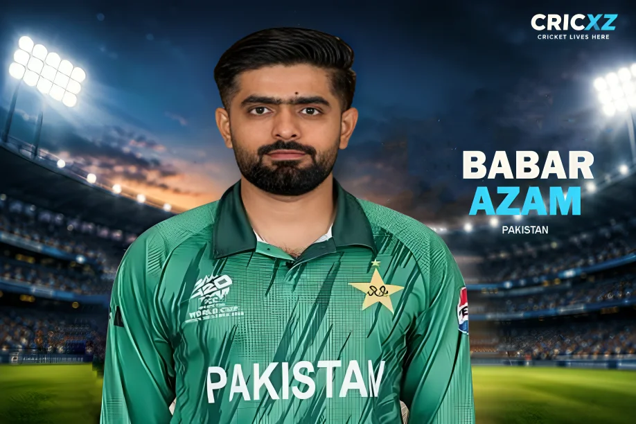

Test
- Matches
- 66
- Batting innings
- 122
- Runs
- 4,771
- Highest score
- 196
- Batting average
- 42.98
- Strike rate
- 55.38
- Hundreds
- 9
- Fifties
- 34

Babar Azam is widely regarded as one of the finest contemporary batters, accumulating nearly 16,000 international runs and 32 centuries across formats. Known for his elegant cover drives and batting consistency, he remains the cornerstone of Pakistan's batting lineup.
Career statistics updated: 2 October 2026
Primary statistics source: PCB / ICC
As of October 2026, Babar Azam has amassed 15,993 international runs. He boasts an exceptional ODI average of 53.43 with 6,626 runs and 20 centuries. In Test cricket, he has aggregated 4,771 runs at an average of 42.98, including 9 hundreds and a career-best of 196 against Australia in 2022.
His T20I record is equally impressive. Competing in 145 matches, he has scored 4,596 runs at an average of 38.94. Babar's composed batting style anchors the Pakistani innings across formats, making him a central figure in high-stakes matches, including the recent Asian Games 2026 Final.
Babar previously held the No. 1 ranking for ODI batters, surpassing Virat Kohli's long-standing reign in 2021. His 32 international centuries cement his legacy as one of Pakistan's all-time greats.
13 October 2016
Against West Indies at Dubai International Stadium.
31 May 2015
Against Zimbabwe at Gaddafi Stadium, Lahore.
7 September 2016
Against England at Old Trafford, Manchester.
Broke the record for the highest score by a captain in the fourth innings of a Test match with a marathon 196.
Won the prestigious ICC award in consecutive years for his phenomenal consistency in the 50-over format.
Reached the 2,000-run milestone in just 52 innings, surpassing Virat Kohli's record at the time.
Career statistics updated: 2 October 2026. Test, ODI and T20I aggregate figures use the PCB and ICC career-statistics baseline.